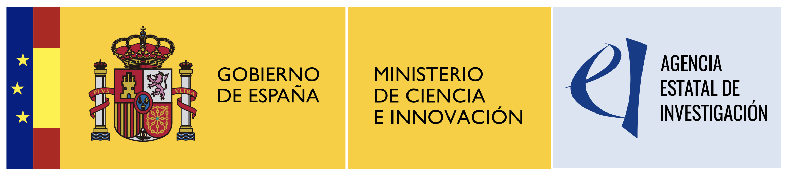

Models of Decision and Optimization Research Group
Welcome to WIBApp!, a software tool for a weightless, interval-based approach multicriteria decision making method. WIBApp automates a solution selection approach of interest in a multi-criteria decision problem. This task arises in multiple scenarios such as the (a posteriori) evaluation of optimal or high quality solutions of an optimization problem. It requires a very simple data input and provides as output a comprehensive evaluation of the solutions so that the decision maker can choose the most suitable ones for a particular situation. More details are provided in the Help section.
This tool has been developed within the COMAS Project: COntext Modelling and Analysis for the Design of Automated Decision-Making Systems in Tourism and Mobility) supported by the Ministerio de Ciencia e Innovación (Spain) - Ref. PID2020-112754GB-I00.
|
 | |
|
Models of Decision and Optimization Research Group |
University of Granada | Agencia Estatal de Investigación. Ministerio de Ciencia e Innovación (Spain) |
Please, if you have any questions, just let us know by writing to us at:
Pavel Novoa-Hernández, pavelnovoa@correo.ugr.es
MODO, University of Granada, Spain.
David A. Pelta, dpelta@ugr.es
Dept. CS and AI, University of Granada, Spain.